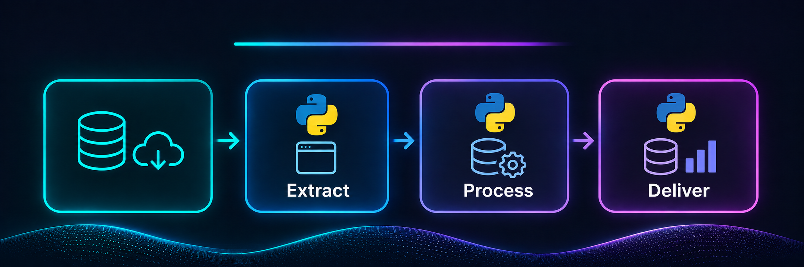

PROJECT CASE STUDY
EPA Greenhouse Gas Data Automation
Automated extraction and standardization of environmental reporting data from 2010–2024.
01IntroductionScope and context
02MethodologyHow I approached the work
Workflow at a glance
Follow the stages below, then read the detailed methodology.
Detailed methodology
Stage 1 — Automated data extraction
The workflow gathered EPA greenhouse gas reporting records using available EPA data access methods, including API-based retrieval and automated downloads from the FLIGHT reporting interface. Python scripts replaced repetitive manual acquisition steps and supported assembling a multi-year historical collection.
Stage 2 — Processing and standardization
After extraction, the data were cleaned and transformed into consistent analytical tables. This included aligning reporting-year information and organizing facility, greenhouse gas, sector, subsector, and emissions fields so that records from different source tables could be used together. The purpose was to reduce inconsistencies introduced by manual preparation and create a repeatable processing workflow.
Stage 3 — Schema-based delivery
The processed information was reorganized to follow a relational data structure defined in collaboration with the project's technical lead. This separated raw acquisition from downstream data organization and made the outputs more suitable for subsequent integration, quality review, and environmental analysis. The final physical storage format is not specified here pending confirmation.
Reusability and maintenance
The workflow was designed as a series of documented Python scripts so that team members could repeat the extraction and transformation steps as additional reporting years became available. This reduced reliance on one-off manual downloads and supported a more maintainable data preparation process.
03FiguresProject visual

PROJECT TAKEAWAYS
Why This Project Matters
Reliable environmental data at scale
Practical and scientific value
Automating multi-year greenhouse gas data acquisition helps researchers spend less time assembling records and more time examining facility-level emissions, reporting patterns, and environmental trends. A repeatable pipeline also makes future annual updates easier to manage.
What it demonstrates as a data scientist
This project demonstrates Python-based ETL, API and web-data acquisition, table transformation, schema-oriented organization, and workflow documentation. Its central engineering challenge was converting historical reporting information into a consistent, reusable analytical resource.